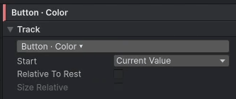

트랙 옵션
트랙 옵션은 첫 키의 값을 어디서 가져올지, 키 값을 무엇을 기준으로 읽을지 정합니다. 트랙을 고르면 트랙 인스펙터에 나옵니다.

Start
첫 키의 값을 어디서 가져올지 정합니다.
이 옵션이 다루는 문제는 "재생이 중간에 끊길 때"입니다. 버튼이 1 → 1.08로 커지는 도중(1.04)에 마우스가 나가면 Unhover가 재생됩니다. 이때 Unhover의 첫 키가 적힌 값(1.08)이면 크기가 1.04에서 1.08로 튀었다가 줄어듭니다. 첫 키를 재생을 시작하는 순간의 값(1.04)으로 하면 그 자리에서 이어집니다.
| 값 | 뜻 |
|---|---|
Key Value |
키에 적힌 값 |
Current Value |
재생을 시작하는 순간의 값 |
Pointer (press position) |
상태를 재생시킨 포인터를 누른 위치. UI(RectTransform)의 Position 트랙에서만 쓸 수 있고, Play On이 포인터 이벤트일 때 동작합니다 |
Current Value는 재생이 중간에 끊겨도 값이 튀지 않습니다. 그래서 호버와 언호버, 열기와 닫기에 씁니다.Key Value는 매번 같은 곳에서 출발해야 할 때 씁니다. 예를 들어 0에서 시작하는 등장 연출입니다.Current Value트랙의 첫 키를 0초보다 뒤에 두면 그 시간만큼 기다렸다가 출발합니다.Pointer에서는 뒤의 키들이 누른 자리를 기준으로 합니다. 그래서(0,0)이 "누른 그 자리"입니다. 버튼 리플 효과에 씁니다.
Relative To Rest
키 값을 원래 값에 더합니다.
크기가 다른 버튼 여러 개에 같은 "누르면 조금 작아지는" 연출을 쓰는 경우가 예입니다. Size 트랙에 (200, 80) 같은 값을 적으면 그 크기의 버튼에만 맞습니다. Relative To Rest를 켜고 −(34, 17)을 적으면 버튼마다 자기 크기에서 34×17만큼 줄어듭니다.
원래 값은 다음과 같습니다.
- 실행 중: Awake 때의 값
- 미리보기: 미리보기를 시작할 때의 값
Size Relative
키 값을 대상 자신의 크기에 대한 배수로 읽습니다. x = 1이면 자기 폭만큼입니다. UI(RectTransform)의 Position과 Size 트랙에서만 쓸 수 있습니다.
그래서 해상도가 달라도 같은 비율로 움직입니다. 예를 들어 화면이 오른쪽으로 한 화면 떨어진 곳(x = 1)에서 0으로 들어오게 할 수 있습니다.
텍스트 트랙의 옵션
위 옵션은 키프레임 트랙에 있습니다. 텍스트 트랙은 옵션이 다릅니다.
- Reveal 트랙에는 Scramble만 있습니다.
- 글자별 트랙에는 Stagger와 Duration per Char만 있습니다.
- Reveal과 글자별 트랙의 Start는 항상 Key Value입니다. Number 트랙은 보통 트랙처럼 Start, Relative To Rest를 고를 수 있습니다.
자세한 내용은 텍스트 트랙을 참고하세요.